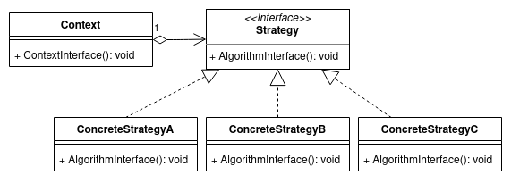

The purpose of a Class is to specify a classification of objects and to specify the Features that characterize the structure and behavior of those objects.
- Object Management Group
Le diagramme de classes est un schéma utilisé en génie logiciel pour présenter les classes et les interfaces des systèmes ainsi que les différentes relations entre celles-ci.
- Wikipedia
Principaux éléments graphiques
Nom
Représentation
Description
Class
Elément permettant d'identifier une classe du diagramme.
Si le nom de la classe est en italic et précédé de <<Abstract>>, il s'agit alors d'une classe abstraite.
Si le nom de la classe est précédé de <<Interface>>, il s'agit alors d'une interface.
Attribute
Attribut associé à une classe. Les symboles suivants permettent de définir la visibilité :
+ public
- private
# protected
~ package
Operations (Method)
Méthode associée à une classe.
Principaux éléments graphiques
Nom
Représentation
Description
Association
Réprésente une relation logique entre deux classes. Souvent impliqué par un attribut de la classe.
Unidirectional association
Réprésente une relation logique à sens unique entre deux classes.
Dependency
Représente une dépendance entre deux classes. Souvent impliqué par le type d'un paramètre ou du retour d'une méthode.
Principaux éléments graphiques
Il est possible d'utiliser des cardinalités pour préciser le nombre d'entités associées.
0..1
Zéro ou une instance
1
Une et une seule instance
0..* ou *
Zéro ou plusieurs instances
1..*
Une ou plusieurs instances
Class1 est lié à 1 Class2
Class2 est lié à * Class1
Principaux éléments graphiques
Nom
Représentation
Description
Inheritance
Représente un héritage entre deux classes.
Implementation
Représente l'implémentation d'une interface par une classe.
Aggregation
Représente une relation de subordination entre deux classes. Cela permet d'identifier une classe qui contiendra une collection d'autres classes.
Composition
Représente une relation forte entre deux classes. Si Class1 est détruite, Class2 sera également détruite.
Forward engineering : Class
class Person {
private string $firstname;
private string $lastname;
private \DateTime $birthdate;
public function setFirstname(string $firstname): self {
$this->firstname = $firstname;
return $this;
}
public function setLastname(string $lastname): self {
$this->lastname = $lastname;
return $this;
}
public function getFullname(): string {
return $this->firstname . " " . $this->lastname;
}
public function setBirthdate(\DateTime $birthdate): self {
$this->birthdate = $birthdate;
return $this;
}
public function getAge(): int {
return (new \DateTime())->diff($this->birthdate)->y;
}
}
import java.util.Date;
public class Person {
private String firstname;
private String lastname;
private Date birthdate;
public Person setFirstname(String firstname) {
this.firstname = firstname;
return this;
}
public Person setLastname(String lastname) {
this.lastname = lastname;
return this;
}
public String getFullname() {
return this.firstname + " " + this.lastname;
}
public Person setBirthdate(Date birthdate) {
this.birthdate = birthdate;
return this;
}
public int getAge() {
// TODO: Implement age calculation
return 0;
}
}
class Customer {
private string $firstName;
private string $lastLame;
}
Forward engineering : Association Dependency
class Invoice {
private string $fileName;
public function generatePdf(Order $order): void {
// TODO: Generate PDF file from Order object
}
}
class Order {
private Customer $customer;
}
Forward engineering : Inheritance
class Person {
public string $firstname;
public string $lastname;
public function getFullname(): string {
return $this->firstname . " " . $this->lastname;
}
}
class Employee extends Person {
public float $salary;
public function getFullname(): string {
return parent::getFullname() . " (employee)";
}
}
Forward engineering : Implementation
interface Weightable {
public function getWeight(): float;
}
class Person implements Weightable {
public string $firstname;
public string $lastname;
public float $weight;
public function getWeight(): float {
return $this->weight;
}
}
Forward engineering : Implementation
L'exemple précédent pourrait permettre de définir plusieurs classes implémentant l'interface Weightable.
Dans le cas d'une compagnie aérienne, nous pourrions par exemple avoir une autre classe Lugguage implémentant également l'interface Weightable
Cela permettrait ensuite d'écrire une fonction qui permettrait de calculer le poids total transporté :
function getTotalWeight(Collection<Weightable> $items) {
$total = 0;
foreach($items as $item) {
$total += $item->getWeight();
}
return $total;
}
Forward engineering : Aggregation
class Car {
public string $model;
private Engine $engine;
public function __construct(Engine $engine)
{
$this->engine = $engine;
}
}
class Engine {
public int $power;
public string $energy;
}
Si la voiture a un accident, le moteur peut être retiré et installé sur un autre véhicule.
Forward engineering : Composition
class Person implements Weightable {
public string $firstname;
public string $lastname;
private Head $head;
public function __construct()
{
$this->head = new Head();
}
}
class Head {
public string $hairColor;
}
Principes de la POO
Composition over inheritance : Préférer utiliser le principe de composition plutôt que l'héritage
Program to an 'interface', not an 'implementation' : Favoriser l'utilisation d'interfaces plutôt que des classes concrètes.
SOLID
Single-responsibility principle : Chaque classe ne doit avoir qu'une seule responsabilité.
Open–closed principle : Le code doit être ouvert à l'extension mais fermé à la modification.
Liskov substitution principle : Une fonction utilisant la référence d'un type doit pouvoir utiliser utiliser les références de ses sous-types sans les connaître.
Interface segregation principle : Plusieurs interfaces spécifiques sont meilleures qu'une seule interface générique.
Dependency inversion principle : Dépendre des abstractions et non des implémentations.
Exemple
Exercice
Créer un diagramme de classe permettant de choisir un algorithme de température (l'unité de base sera le celsius)
Ecrire ensuite le code source correspondant en utilisant le langage orienté objet de votre choix

Design pattern Strategy
Exercice
Créer un diagramme de classe pour une application de gestion d'une école.
Il y aura 3 types d'utilisateurs (étudiant, enseignant et administration)
Les étudiants auront des cours d'une matière, dans une salle avec un enseignant
Les étudiants pourront avoir des notes associées à une matière
Chaque salle pourra contenir zéro ou plusieurs ordinateurs
Exercice (suite)
Dans le but de réaliser des économie d'énergie, l'école souhaiterait ajuster la chaleur de chaque salle en fonction du nombre d'étudiants et des ordinateurs présent à l'intérieur.
Pour cela, elle souhaiterait pouvoir utiliser une librairie déjà existante :
interface Heatable {
public function getWatts(): float;
}
interface Sizeable {
public function getHeight(): int;
public function getWidth(): int;
public function getLength(): int;
}
Créez un diagramme de classe pour représenter des produits ayant un prix
Si le prix d'un produit est mis à jour, les utilisateurs abonnés au produit doivent être notifiés
Utilisez le design pattern Observer pour gérer le système de notification
Ecrire ensuite le code source correspondant en utilisant le langage orienté objet de votre choix
Exercice
Créez un diagramme de classe pour gérer des dossiers et des fichiers
Les dossiers et les fichiers doivent avoir un nom ainsi qu'une date de création
Un dossier peut contenir des sous-dossiers et/ou des fichiers
Un fichier à une extension
Il est possible d'ouvrir un dossier (pour récupérer une liste des sous-dossiers + fichiers) ou un fichier (récupéré au format txt)
Il est possible de connaître le poid d'un fichier et de calculer le poid d'un dossier
Ecrire ensuite le code source correspondant en utilisant le langage orienté objet de votre choix
Exercice
L'entreprise StarBuml qui vend des cafés souhaite totalement informatiser ses processus. De la prise de la commande à la livraison en passant par la préparation, l'ensemble de ces tâches devront être enregistrées dans un système d'information.
Voici le fonctionnement actuel :
Un client arrive dans le café et fait la queue pour passer sa commande
Il passe ensuite sa commande auprès du caissier
Le caissier demande alors au client de payer pendant que son café est préparé
Si la commande est simple (expresso, café allongé...), c'est le caissier qui prépare le café
Sinon, c'est un "Barista" qui va s'en occuper
Une fois le café prêt et que la commande est payée, il est alors livré au client
Exercice (suite)
Vous allez donc schématiser l'application qui sera réalisée en présentant :
Un diagramme de cas d'utilisation
Un diagramme d'activité
Un diagramme de séquence présentant l'enregistrement en base de données de la commande et le calcul du montant à payer
Un diagramme de classe qui utilisera le design pattern Decorator afin d'ajouter des ingrédients au café (sucre, lait, chocolat...) et ainsi calculer le coût de la commande